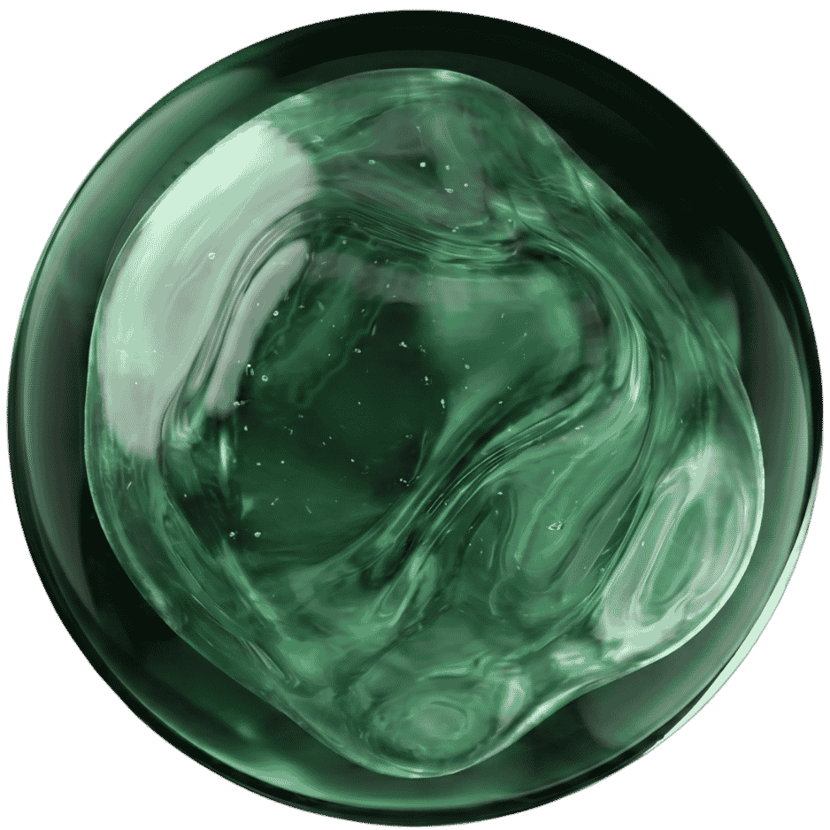

01
EverTutor AI System
Sole Product Designer · 0→1
The world’s first multimodal, voice-first AI tutor — three tools working as one system to put a tutor beside every learner.
2,000+ active learners−96% workflow time0→$500k+ ARR